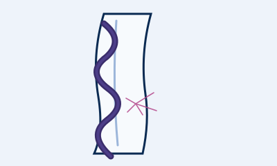
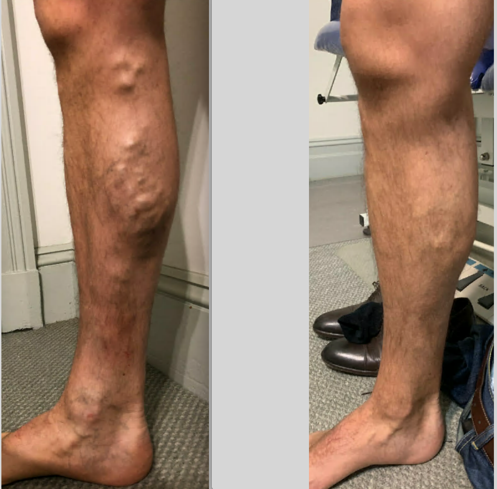

Overview
Varicose veins are swollen, rope-like veins that bulge beneath the skin, most often in the legs. They develop when the tiny one-way valves inside the veins weaken, allowing blood to pool instead of flowing back to the heart. Spider veins are the same problem on a smaller scale — fine red, blue or purple threads visible at the skin's surface.
As well as their appearance, varicose veins can cause real discomfort and, left untreated, may lead to skin changes or ulcers over time.
Symptoms
- Aching, heavy or tired legs, especially after standing
- Swelling around the ankles
- Throbbing, burning or itching over a vein
- Night cramps or restless legs
- Visible bulging, rope-like or thread-like veins
- Skin discolouration or ulcers near the ankle in longstanding cases
Causes & risk factors
- Weakened or damaged vein valves
- Family history of varicose veins
- Pregnancy and hormonal changes
- Prolonged standing or sitting
- Increasing age
- Being overweight
Treatment options
Vein stripping surgery is largely a thing of the past. Today most varicose veins are treated with minimally invasive techniques, usually in the clinic and without a general anaesthetic:
- Duplex ultrasound mapping — a painless scan to map the veins and plan treatment
- Endovenous laser ablation (EVLA) — heat closes the faulty vein from the inside
- Ultrasound-guided sclerotherapy — a solution is injected to close larger, deeper veins
- Microsclerotherapy — fine injections for smaller spider veins
- Compression stockings and lifestyle measures to support treatment

What to expect
Your visit begins with a consultation and a duplex ultrasound so Dr Wong can see exactly which veins are involved. She'll then explain your options and recommend a plan. Most treatments are minimally invasive with little downtime — many patients walk in and walk out the same day.
This information is general and is not a substitute for medical advice. Please see Dr Wong for advice about your individual situation.